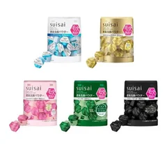
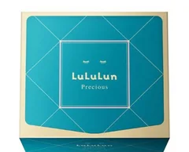
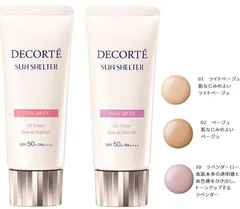
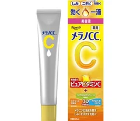
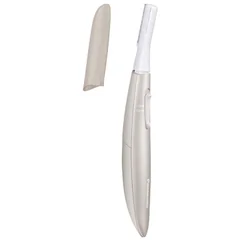

洗顔

スイサイ
ビューティクリア パウダーウォッシュ
1回分×32個入
¥2090税込・出典掲載価格
書き込みの声
- 酵素の洗顔パウダーで名前が挙がったのがこれ。週に1回だけ使うとスッキリするという声
- 1回分ずつ小分けなので、使いすぎずに済む
気になる声使った直後はつるつるでも、そのあと保湿をしっかりしないとガサガサになるという声も
販売価格・容量・送料はリンク先でご確認ください
THE COSME EDIT / 2026.09.19
ガルちゃんのくすみ・顔色・透明感・黄ぐすみのトピ41個（書き込み6,439件）から。動画では、買う前にできる「色つきの下地を顔全体に塗らない」「毎日こすらない」「美白を重ねる前に保湿でふたをする」「粉を重ねない」「顔のまわりに暗い色を置かない」から先に話しています。使った人の声のまとめで、結果を保証するものではありません。赤み・かゆみ・ヒリヒリが出たら皮膚科へ。急に顔や白目が黄色くなったときは内科へ。
05 ITEMS 動画で紹介した商品
動画でいちばん時間を割いているのは商品ではなく、やめること（色つき下地の塗りすぎ・毎日こするケア・美白の重ねづけ・粉の重ねづけ・顔まわりの暗い色）と、1時間に1回首と肩を回すことです。買う前にそちらを試してみてください。
価格は出典掲載時のものです。楽天の現在価格とは異なる場合があります。

スイサイ
1回分×32個入
¥2090税込・出典掲載価格
書き込みの声
気になる声使った直後はつるつるでも、そのあと保湿をしっかりしないとガサガサになるという声も
販売価格・容量・送料はリンク先でご確認ください

ルルルン
32枚入
¥2090税込・出典掲載価格
書き込みの声
気になる声長く貼りすぎると乾燥すると聞いた、という声も。袋に書いてある時間を守って
販売価格・容量・送料はリンク先でご確認ください

コスメデコルテ
35g・全3色
¥3350税込・出典掲載価格
書き込みの声
気になる声ラベンダー系は塗りすぎると白っぽく浮くという声も。量はパール1粒ぶんから
販売価格・容量・送料はリンク先でご確認ください

メラノCC
20mL
¥1210税込・出典掲載価格
書き込みの声
気になる声ビタミンCは刺激を感じる人もいるので、最初は少しの範囲から試すという声も
販売価格・容量・送料はリンク先でご確認ください

パナソニック
ES-WF53-E ベージュ
¥3154税込・出典掲載価格
書き込みの声
販売価格・容量・送料はリンク先でご確認ください
SOURCE & NOTES
集計期間：2026年9月18日に確認（書き込みは2015年〜2026年）
価格は2026年9月18日に楽天の商品ページで確認した税込価格です。見出しは動画で出てきた場面の名前で、順位ではありません。色や容量によって価格が変わります。